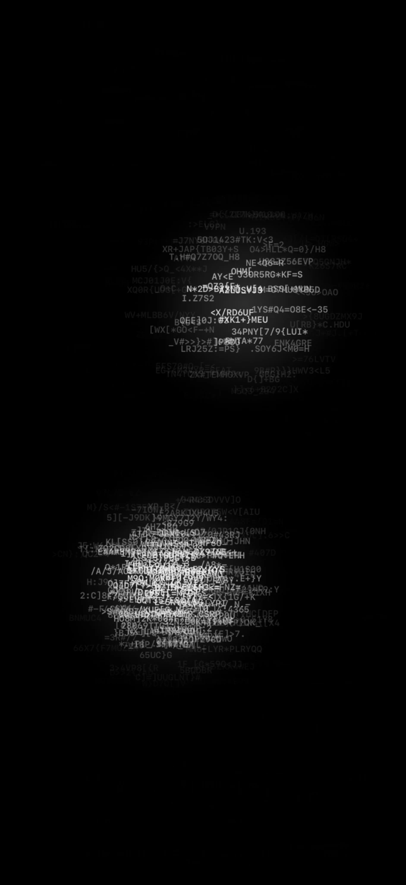

TOUCH. READ. SEE AGAIN.
DigitalTactillity
만드는 사람에서,
다시 보는 사람으로.
손짓을 만들고, AI의 비평을 읽고,
자신의 움직임을 다시 감상한다.
이 과정 전체가 하나의 작품이다.

THE ARTWORK
작품은 손끝에서 시작해,
다시 읽는 순간까지.
나는 손의 움직임을 기록하고, 궤적과 리듬을 AI가 읽을 수 있게 정리했다. AI가 그 움직임을 언어로 비평하면, 사용자는 자신의 손짓을 다른 시선으로 다시 감상한다. 손짓을 만드는 일과 그 비평을 다시 해석하는 일을 모두 작품에 포함했다.
01 / ARTIST
별다른 목적 없이,
손을 움직인다.
긋고, 멈추고, 되풀이하는 손짓에 궤적과 리듬이 남는다. 사용자는 먼저 움직임을 만드는 예술가가 된다.
FROM GESTURE TO LANGUAGE
사라지는 손짓을,
읽을 수 있는 기록으로.
화면에서 지나간 움직임은 그 순간의 감각만으로 남기 쉽다. 나는 궤적과 속도 변화, 반복과 멈춤이 언제 어디서 나타났는지 함께 기록했다.
평균 속도가 같아도 처음과 끝의 움직임은 다를 수 있다. 숫자 몇 개로 줄이기보다, 움직임의 모양과 순서를 함께 남기는 쪽을 택했다.
오른쪽은 실제 기록 화면이다. 감각 화면과는 서로 다른 세션이다.
A DIFFERENT KIND OF AI
AI는 대신 그리지 않는다.
내가 만든 것을 읽는다.
AI에 맡긴 것은 사람의 속마음을 맞히는 일이 아니다. 기록에서 확인할 수 있는 움직임의 형식만 보고 말하게 했다. 그리는 사람의 감정이나 의도는 단정하지 못하게 하고, 비평이 자신에게 어떤 의미인지 읽는 일은 사용자에게 남겼다.
ACTUAL CRITIQUE / EXCERPT
“Direction here is not a destination;
it is something repeatedly renegotiated.”
방향은 목적지가 아니라,
거듭 재협상되는 무엇이다.
실제 출력 「A Choreography of Provisional Contact」에서 발췌. 아래 문장은 발췌 번역이다.
AI의 언어는 내가 미처 의식하지 않았던 방향 전환과 반복을 다시 보게 하는 또 하나의 시선이다. 그 비평을 받아들이거나 다르게 읽는 순간, 사용자는 다시 감상자가 된다.
ARTIST + VIEWER
내가 만든 손짓이,
낯선 작품으로 돌아온다.
사용자 = 예술가 + 감상자.
손짓, AI의 비평, 그 비평을 다시 읽는 사용자.
이 셋이 함께 작품을 이룬다.
제작 기록
기획부터 설계 판단, 구현 과정까지 담은 원본 보고서입니다. 2026.08.15 기준 기록입니다.
프로젝트 과정 보고서 PDF- 형태
- iOS 인터랙티브 아트 · 작동 프로토타입
- 시작
- 2026년 7월
- 핵심 구현
- 터치와 시각·햅틱 반응 / 제스처 기록 / 구조화된 움직임 데이터 / AI 비평
- 내가 정한 것
- 작품의 범위, 터치 기록 방식, AI가 해석할 수 있는 범위와 사용자가 읽을 비평의 문체
- 제작 방식
- 개인 프로젝트 · 생성형 AI 및 코딩 에이전트와 협업